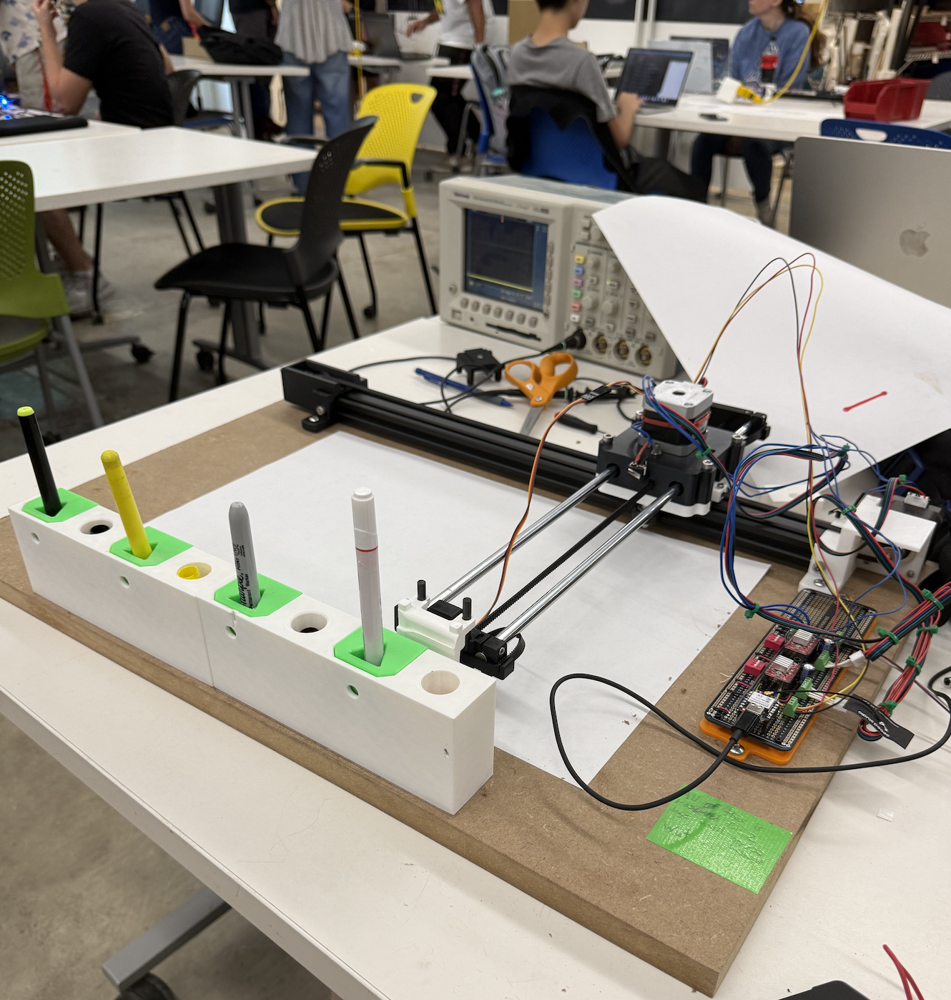
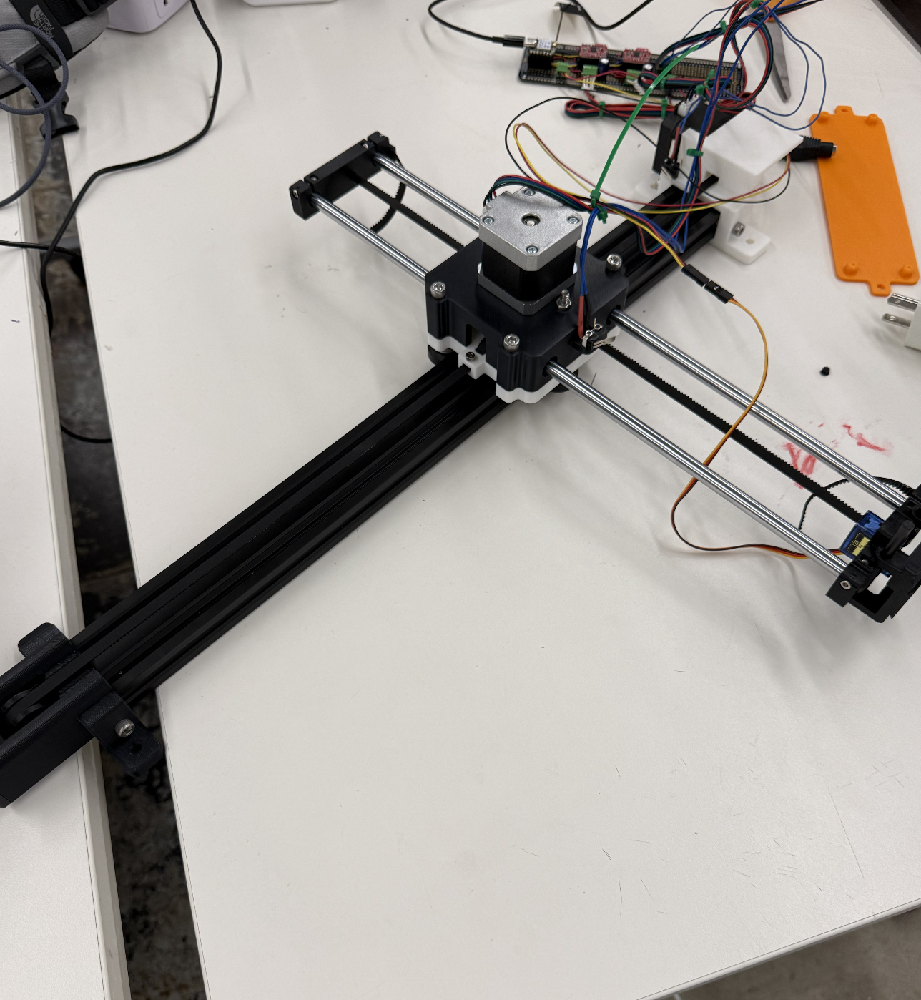
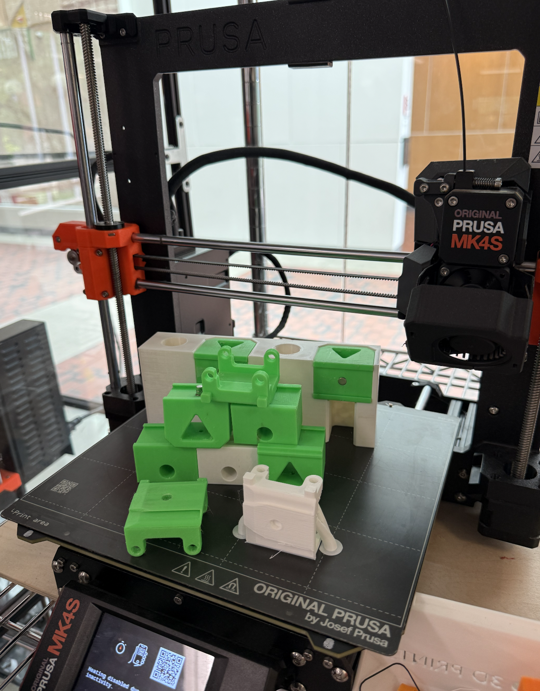

Week 10: Machine Building

By: Wut Chomworawong, Otavio Dutra, Charles Jaffe, and Charles Jiang
Base Machine Kit

Assembled Drawing Machine Kit
We were able to assemble the base kit for the drawing machine that was provided to us in class and the lab session after class. The kit consists of an x-axis that is driven by a stepper motor along a alluminum extrusion pulled along by a timing belt. The Y-Axis is also driven by a stepper motor that moves two steel rods through linear bearings using timing belts to extend and retract the toolhead. The toolhead is able to move up and down on the z-axis by using a small servo that pushes the toolhead up and down on carbon fiber rods.
Click Me! link to kit model and assembly instructions
Multi-Color Drawing Machine Idea
Design Idea Drafts
We wanted to create a drawing machine that would be able to change colors without needing fancy technology to physically change the ink using the same tube and can be done with ordinary pens. We took insperation from how the Prusa XL 3D printer changed its filament.
Prusa Mechanism
The way adapted the way the Prusa changed filament was to take the idea of going in change colors by comming in with the toolhead from the side and instead of locking with springs we will be using strong magnets with one on the pen-holder and one on the toolhead. The way we will lock against Z-Axis forces will be by using tight dovetail joints that will fit snuggly with each other. We will attatch pens to the pen holder which will be placed in a hub and stay there until the toolhead comes and extracts it out.
3D printing

All 3D printed Parts
First iteration
First:PenHolder, Second:Toolhead attatchement, Third:Dovetail Connection
This the first iteration or proof of concept of the way we are going to change toolheads. We will do this by like in the third image using dovetail joints to slide the toolhead attatchment into each Penholder. The pens will go into the hole on the penholder. There is also a hole for magnets which will prevent against most forces while writing so that the toolhead does not come loose. We printed many versions of the penholder to test differnt tolerances until we found one that would be able to fit snuggly but would still be able for the machine to easily slide in and out of.
Final iteration
First:Full Assembly, Second:Toolhead attatchement, Third:Penholder, Fourth:Hub
We edited the toolhead attatchment(Second Image) by chamfering the edge so that the machine can be less accurate in it's positing to change the penholder. We also added a lip at the end so that the machine would not be able to go over the desired position.
ClickMe!Link to toolhead attatchment STL
We also edited the Penholder(Third Image) by changing the shape of the whole into a triangle that can fit any pen shape by inserting a screw into the backside. We also chamfered the edges on the backside so that it would fit into the hub with less relying on the machine to be totally accurate. We also added a small ridge on the bottom to help the Penholder lock into the hub.
ClickMe!Link to Penholder STL
The hub(Fourth Image) has an indientation with the size of the penholder with negative space below for the pens to fit into. The holes on the top are to fit in screws that will mount the hub onto the board. There are also holes in the back that are for the screws that will lock pens into the penholder. The holes for the screws can also double as pen/marker cap holders.
ClickMe!Link to Hub STL
Code
CLick Me! Link to Machine Code
CLick Me! Link to Website code
Challenges, Troubleshooting, and Testing

Victor helping Charles troubleshoot
Mystery of the frying motor drivers
Troubleshooting video
The X-Axis stepper motor only worked half the time and the motor driver kept frying.
Drawing Machine Test
Test Video
We tested the mechanisms and the allignment of how the machine interacts with the hub, penholder, and toolhead attatchment.
Mystery of the exploding diagonal cutter
Test Video
The screw hole in the hub did not account for the penholder being lifted so we tried to cut the top part of the hole off to expand the hole, however the diagonal cutter exploded into two pieces. In the end we changed to use a set screw which removes the problem as now the screw is flush.